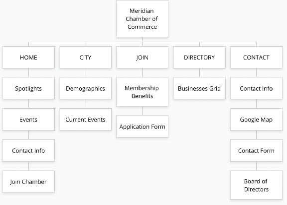

Site Purpose
The main purpose of this website is to provide local businesses with opportunities to make connections and
engage with others in an effort to grow their reputation and success. Members of the chamber will be promoted
through weekly company spotlights. The site will also aim to influence other businesses to join the chamber by
highlighting the benefits of membership.
In addition, the site will also provide local information related to weather and upcoming local activities.
This additional information will help community members feel in-the-know and will also encourage them to come
together to support one another.
Target Audience
Whether it's for a newly-created business or a long-time established business, the Meridian Chamber of Commerce
website offers information, support, and opportunities for owners. Not only does the website target companies
seeking to get there name out there and to feel connected with others, it holds appeal for general members of
the
community as well.
Current members of the chamber can see their businesses advertised and connect with others
to form partnerships and take advantage of learning opportunities. The website will also engage those outside
of the chamber to join and reap the rewards of membership in the Meridian Chamber of Commerce. Finally, anyone
within the local community can find useful and relevant information on the website in the form of weather
summaries/forecasts and upcoming local events open to the public.
Personas
1. Andrea Ramsey is 40-something real estate agent living in Meridian, Idaho with her husband of 20 years. She recently launched a property management company and she is thrilled at the opportunity to finally own her own business. Connecting with others comes naturally to her and she enjoys networking. She is currently contemplating joining the local Chamber of Commerce. She feels this is the next step in getting her business off the ground.
2. Warden Fredrickson turned 67 earlier this year and has just retired after 40 years as a local business owner. He poured his heart and soul into the restaurant he opened in 1980. Even though he has passed "Warden's Grill" on to his youngest daughter, he is still passionate about supporting local businesses. He continues to utilize the Meridian Chamber of Commerce website to stay in-the-know and to find local businesses to support.
Site Map
Color Scheme
Color Palette URL: https://coolors.co/4a5fc1-303087-fbf3f0-a44200-d58936
| Primary | Secondary | Accent 1 | Accent 2 | Accent 3 |
|---|---|---|---|---|
| [#303087] Cosmic Cobalt |
[#4A5FC1] Liberty |
[#FBF3F0] Isabelline |
[#A44200] Rust |
[#D58936] Bronze |
Color Details
- Cosmic Cobalt [#303087] will be used for the html page background as well as paragraph text.
- Liberty [#4A5FC1] will be used for the navigation and footer backgrounds.
- Isabelline [#FBF3F0] will be used for section backgrounds and list text.
- Rust [#A44200] will be used for buttons and paragraph text.
- Bronze [#D58936] will be used for header and section backgrounds.
Typography
Heading Font: Lato
Lato is a sans-serif font that produces clean, elegant, and modern headings. This font will be used for headings, navigation menu items, and buttons.
Paragraph Font: Merriweather
Merriweather is serif font that complements the modern feel of the page. It contrasts well with the sans-serif Lato font and its hefty serifs give it excellent legibility. This font will be used for paragraphs and lists.